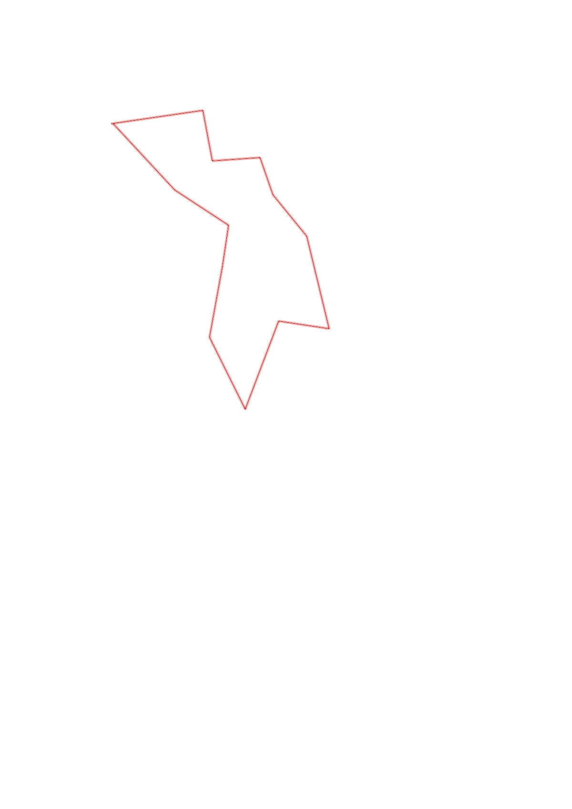
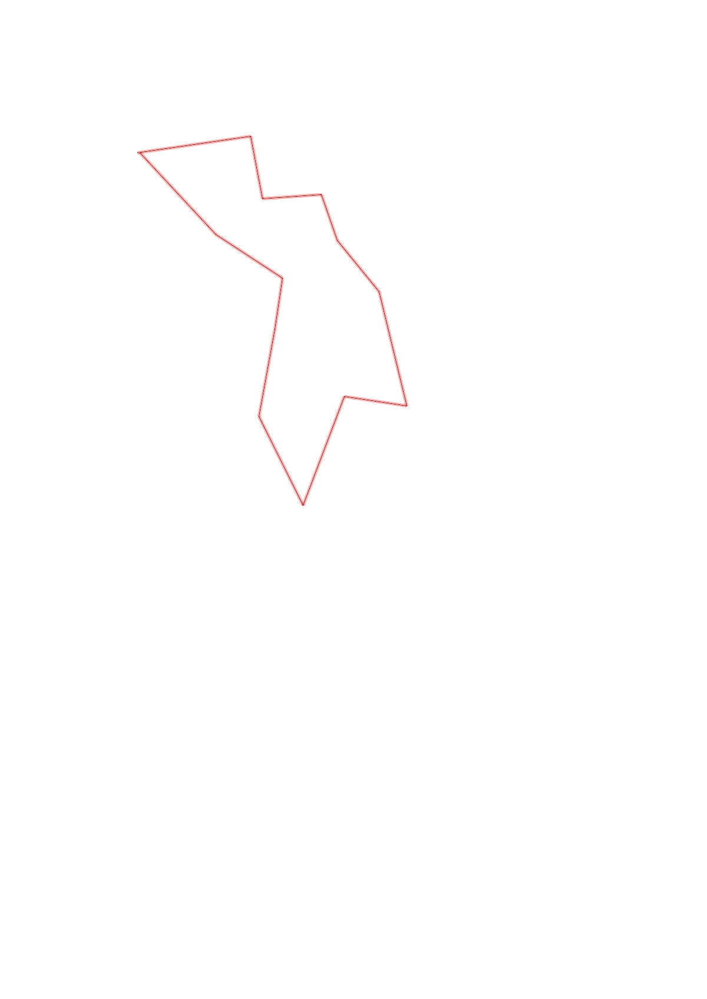

| Control |
Points |
Time Punched |
Distance |
Your Time |
Pace |
Place |
Fastest Time |
Median Time |
% Behind Fastest |
| 33 |
30 |
|
0.49 |
0:04:38 |
09:27 |
8 / 8 |
0:02:06 |
0:03:23 |
120% |
| 32 |
30 |
|
0.27 |
0:03:21 |
12:24 |
2 / 4 |
0:02:47 |
0:03:32 |
20% |
| 57 |
50 |
|
0.25 |
0:02:32 |
10:08 |
2 / 3 |
0:02:27 |
0:02:32 |
3% |
| 52 |
50 |
|
0.21 |
0:04:44 |
22:32 |
4 / 7 |
0:04:11 |
0:04:44 |
13% |
| 63 |
60 |
|
0.28 |
0:03:29 |
12:26 |
3 / 7 |
0:02:58 |
0:03:43 |
17% |
| 104 |
100 |
|
0.5 |
0:16:49 |
33:38 |
3 / 4 |
0:05:55 |
0:14:40 |
184% |
| 35 |
30 |
|
0.27 |
0:05:06 |
18:53 |
2 / 2 |
0:03:03 |
0:04:04 |
67% |
| 103 |
100 |
|
0.49 |
0:05:47 |
11:48 |
1 / 1 |
0:05:47 |
0:05:47 |
0% |
| 75 |
70 |
|
0.42 |
0:04:39 |
11:04 |
2 / 3 |
0:04:33 |
0:04:39 |
2% |
| 43 |
40 |
|
0.38 |
0:02:57 |
07:45 |
3 / 5 |
0:02:11 |
0:02:57 |
35% |
| 95 |
90 |
|
0.22 |
0:01:50 |
08:20 |
2 / 5 |
0:01:04 |
0:05:07 |
71% |
| 42 |
40 |
|
0.34 |
0:03:06 |
09:07 |
2 / 4 |
0:02:38 |
0:03:51 |
17% |
| Finish |
0 |
|
0.47 |
0:02:51 |
06:03 |
4 / 9 |
0:02:13 |
0:03:12 |
28% |
Total Distance Covered: 4.59km
Points Scored: 690
Late Penalty: -40
Final Score: 650
Total Time: 1hours 1minutes 49seconds
Efficiency: 141.61 points/km
 
